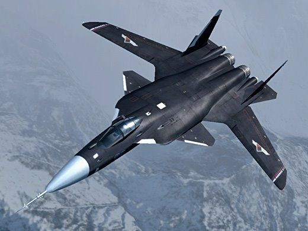

SU-47

O Sukhoi Su-47, anteriormente conhecido como S-37 berkut, é um caça, tendo nos comandos de voo o sistema de controle por cabo elétrico, em inglês chamado de fly-by-wire. Isso significa que todos os cabos, polias e outros dispositivos mecânicos responsáveis pela movimentação das seções de controle da aeronave são substituídos por um sistema eletrônico, onde um computador recebe os comandos oriundos do manche - ou pedais da aeronave - e os repassa às partes móveis ( com as devidas correções e /ou ajustes)
Berkut significa águia dourada, em russo. O primeiro voo do Berkut foi em setembro de 1997, com a designação S-37 ainda. O primeiro estágio dos testes de voo foi completado em 2001. Algumas das características usadas no SU-27 (Flanker, pela OTAN) foram utilizadas também no Berkut, como o canopy (carlinga), trem de pouso e deriva dupla próxima do vertical.
Este caça possui asas FSW (Forward-Swept-Wing ou asa com enflechamento negativo), sendo facilmente reconhecido por esta característica. Asas FSW significam que são "enflechadas" no sentido contrário ao usual, ou seja, para frente. Este conceito de asa já é estudado há muitos anos pelos projetistas de caças, mas somente nos anos recentes, com o emprego da computação na correção dinâmica do voo, é que pode ser utilizado de forma realmente prática. Asas neste sentido proporcionam grande manobrabilidade mesmo em baixas velocidades, próximas ao do "stall" (estol). Todavia, sem uma correção assistida, ela se torna perigosamente instável sob certas condições. O uso de materiais compostos para a diminuição da esteira de turbulência gerada pela asa também foi um avanço que possibilitou a construção do SU-47.
proximo